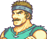

Support Rank C

妻のことは・・・
本当にすまぬことをしたAbout my wife... I truly did something inexcusable.
代われるものなら
いっそ わしが代わってやれれば・・・If I could trade places with her, I wish I could have taken her place instead...

いやNo.
妹は あのとおり
あまり丈夫とは言えない体だったからねMy sister was never a very robust person, as you well know.
最期まで よく生きた
そう思っているI think she lived well, right up to the very end.
すまん・・・I'm sorry...
ただ 気がかりなのは
フィルのことだStill, what worries me is Fir.
まだ年も若いのに母を失い・・・Losing her mother while still so young...
・・・確かに
娘には気の毒なことをした...Indeed, I've done my daughter a disservice.
わしのもとを離れ
武者修行に出たのも・・・That she left my side to go on a warrior's training journey...
母の死に 気持ちの整理が
つかなかったのかもしれんMaybe she just couldn't come to terms with her mother's death.
武者修行に？
旅をしていたのか フィルはA warrior's training journey? So Fir's been traveling, then.
うむMm.
母のような剣士になる
そう言って・・・She said she wanted to become a swordswoman like her mother...
そう か・・・I see... is that so.
Support Rank B
・・・・・・......
バアトルどの どうした？Bartre, what's wrong?
おお カレルどのか
・・・妻のことを思い出していたOh, it's you, Karel... I was thinking about my wife.
妹のことを？About my sister?
ああYes.
妻と会ったのは わしが諸国を
修行して回っていたころ・・・I met my wife back when I was traveling the various lands training...
あの闘技場で わしは
生まれて初めて敗北したAt that arena, I suffered my first defeat ever, in my life.
あのころの妻は
すさまじいばかりの剣士であったMy wife, back then, was a terrifyingly skilled swordswoman.
まるで抜き身の刀
その化身のようなLike a bare blade itself, given human form.
・・・無理もない...That's no surprise.
私も妹も・・・一族は
剣しか伝えず 剣しか知らないBoth my sister and I — our whole clan passed down nothing but the sword, knew nothing but the sword.
当時は 人であることに気づく
いとまもなかったのかもしれないBack then, we probably didn't even have time to notice we were human beings.
戦いを挑み 敗れ
そのたびにわしは再戦を挑んだI challenged her to battle, and lost, and each time, I challenged her to a rematch.
そうして三度目
初めて 初太刀をかわしたAnd so, on the third time, I finally managed to dodge her first strike.
すぐに 二の太刀を受けて
気を失い・・・But right after, I took her second strike and lost consciousness...
目をさますと・・・
そばに妻がいたWhen I woke up... my wife was there beside me.
妻のほほえみを見たのは
それが 初めてであったThat was the first time I ever saw my wife smile.
それからだ わしは妻と旅を続け
共に修行を重ねたFrom then on, I traveled with my wife and we kept training together.
結局・・・一度も
妻には勝てなかったがIn the end... I never once managed to beat her, though.
ほほえみか
妹が・・・めずらしいA smile, huh. My sister smiling... that's rare.
それだけ バアトルどのを
好いていたのだろうねIt must mean she cared for you that much, Bartre.
そうであろうか・・・Is that really so...?
Support Rank A
病に伏すようになって・・・Once she started to fall ill...
妻は初めて
自分のことを語ってくれたMy wife began to speak about herself for the first time.
家族のこと カレルどののこと
そして 自分のこと・・・About her family, about you, Karel, and about herself too...
バアトルどのにみとられて
妹は幸せだったと思うよI think my sister was happy, with you watching over her at the end, Bartre.
カレルどのに お会いしたのも
このころであったなIt was around this time that I first met you too, Karel.
あのころのカレルどのは
妻の昔を見るようであったYou, back then, were like watching my wife's past come to life.
すさまじく強く・・・
それでいて どこか危ういようなTerrifyingly strong... and yet, somehow precarious too.
・・・たしかに...True enough.
あの時 私はろくに言葉もなく
妹と別れたBack then, I parted from my sister with hardly a word.
あれが今生の別れとは・・・
情のうすい兄と思われたことだろうなThat it would turn out to be our final farewell... she must have thought me a cold-hearted brother.
いや
わしはそうは思わんNo, I don't think that at all.
妻は わしに話してくれた
兄と過ごした幼少の日々をMy wife told me about it — the days of her childhood, spent with her brother.
病いの床で なつかしげに・・・
何度も話してくれたOn her sickbed, fondly... she told me about it, again and again.
・・・・・・
そうか・・・......I see...